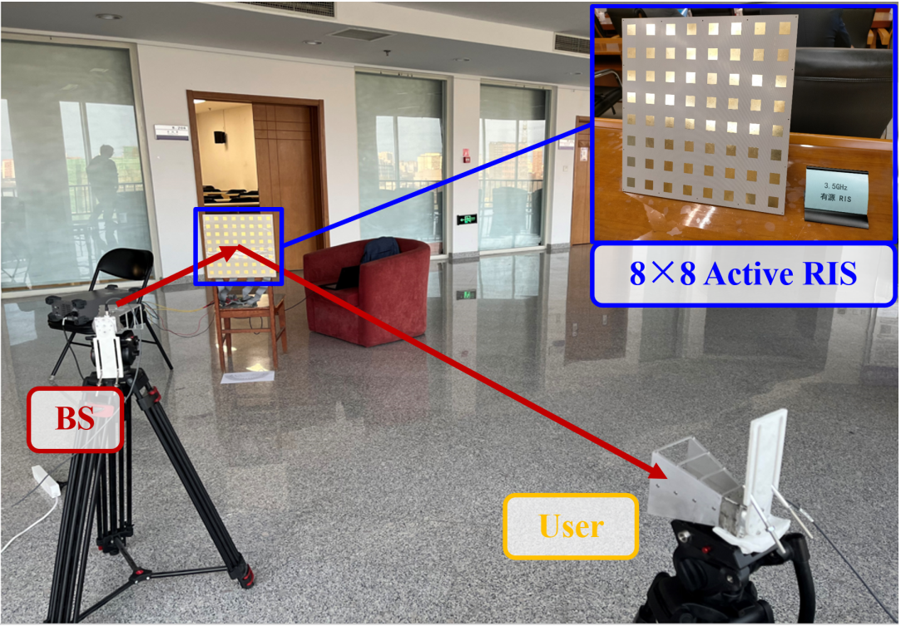
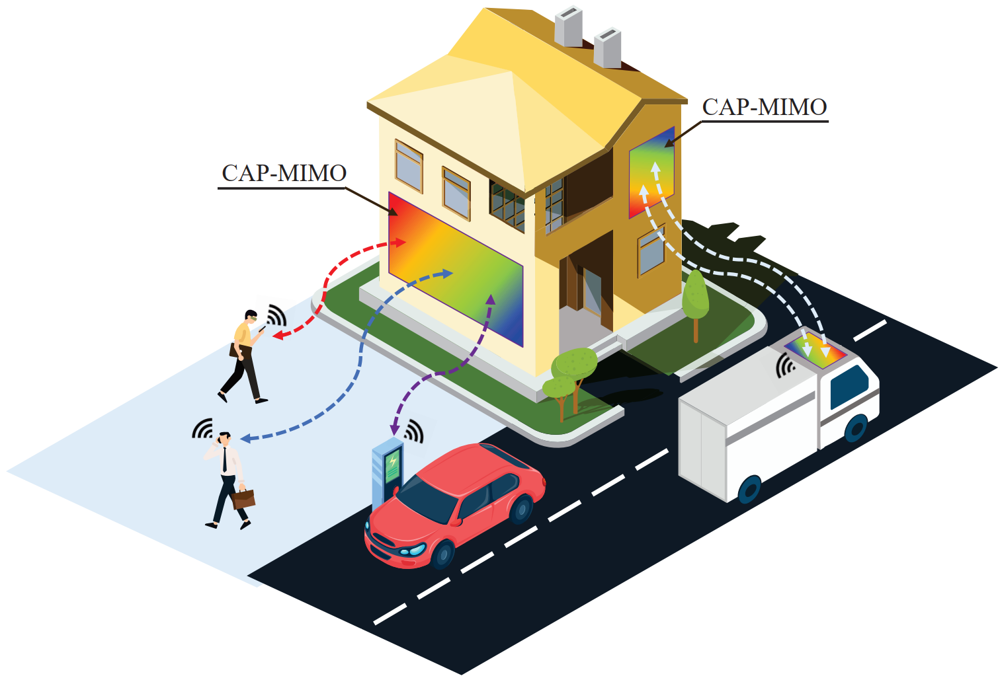
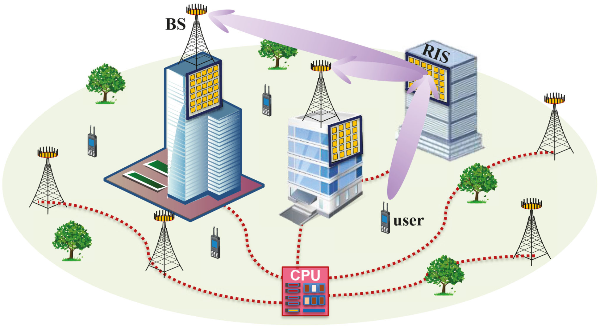

RIS & Cell-Free Networks
Wideband precoding, active RIS modeling, and energy-efficient architectures.
Zijian Zhang is a Ph.D. graduate in Electrical Engineering working across holographic MIMO, reconfigurable intelligent surfaces, signal processing, localization, and robotics.

Four connected directions spanning theory, hardware architecture, algorithms, and physical prototypes.
Wideband precoding, active RIS modeling, and energy-efficient architectures.
Continuous apertures, pattern division, near-field beam training, and channel estimation.
Signal-multiplexing ranging, network localization, and integrated sensing.
UWB localization, UAV formation, embedded sensing, and autonomous robots.
Representative work from the full publications archive.
Project cards give visitors a visual route into the technical details.

Hardware-aware modeling and field validation.

Pattern-division multiplexing for large apertures.

RIS-aided capacity and joint precoding.

Real-time tracking with embedded localization.